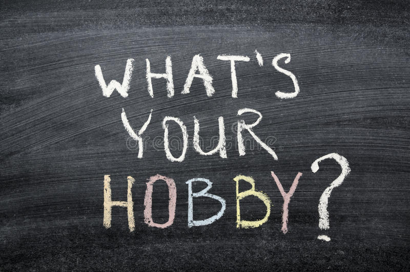
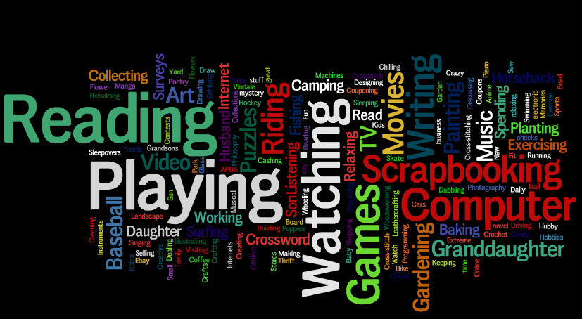
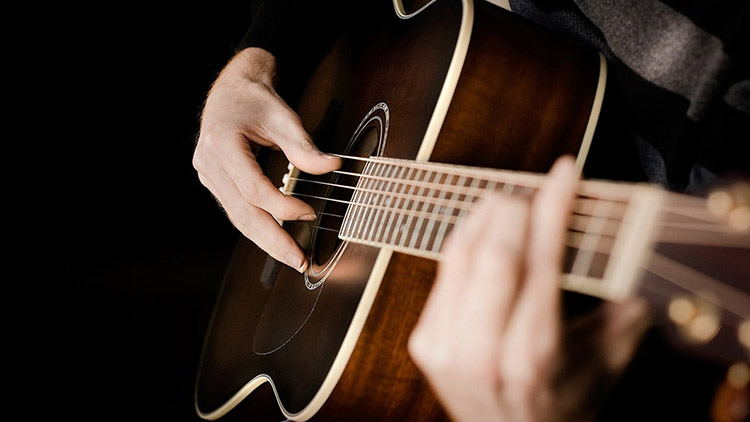
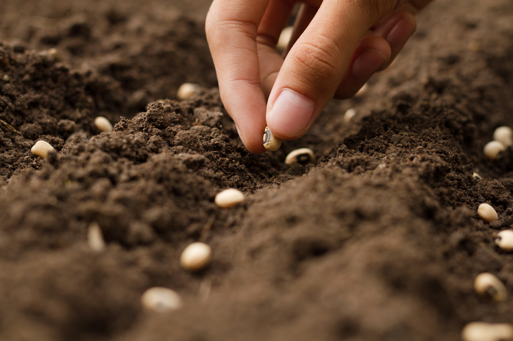
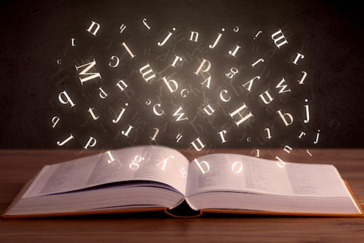
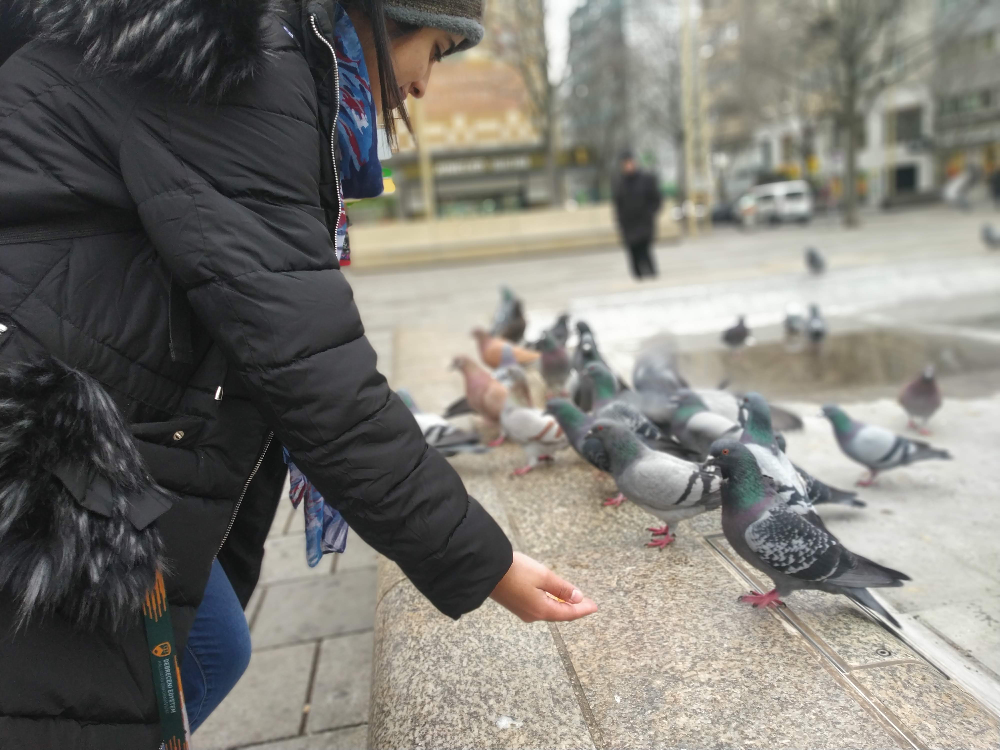
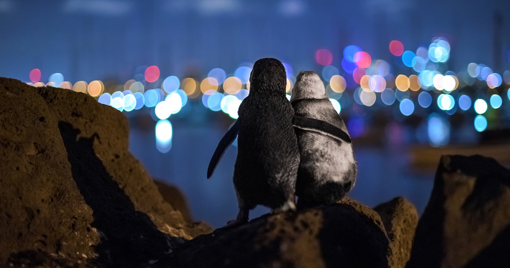

1/6

2/6

3/6

4/6

5/6

6/6

"Find 3 Hobbies: 1. To make you money 2. To keep you in shape 3. To keep you creative".
(An inspiration)
"Find 3 Hobbies: 1. To make you money 2. To keep you in shape 3. To keep you creative".
(An inspiration)
A hobby for me sometimes is just pinning the decore i cannot afford , the recipes i cannot cook or loading up a cart and buying absolutely nothing(saves you the time of getting ready for the window ahopping :)..).But the good thing is it is never the same. sometimes its about sitting outside beneath the sun and relishing the warmth after a cold season, feeling the wind touch your hair , letting the world to happen as you just stay still and let the miracles happen around you. Among many hobbies that i might had and still have since the past 11 years of my life, let me list a few:

Reading is my most favourite becuase i learned how to speak from it.useful and productive but believe me
its not always about "today a reader tommorrow a leader". Sometimes i use them in place of a sleeping pill
(just like i said useful 😂).I have been a reader since i knew how to or maybe i learned to read
from books.Its easier than reading peoples but its like living a million livesin a short span of time.
i can however list a few books that i loved. Wanna see?
books_galllery
_____________

Growing up i was a fan of fantasy and fiction espacially magic. Seems like you just utter some code words and things are done for you.thats how i preceive what Coding is. something magical. the sweet liberty of whatever you wanna be and whenever you wanna be. sure it has turned my hairs white but well its worth it in the end.

Someone said : " Animals are not a hobby you pick and sit down.They are a love that last forever." I learn a whole new languague , a languague of silence and ulove , compassion and understanding. Taking care of them is really hectic sometimes but the love you get and the friendship you have is incredible. My mom once asked my dad why he love animals that much? and he said and i quote"just stop thinking for a second why? and imagine a person if HE/SHE loves an animal that much how much he might love humans. Its a love that spreads like infection."

Photography is yet another hobby i enjoy.It is not about capturing an image , its about capturing the moment within.Its capturing the feeling inside and the story behind it. lets suppose i capture an image of buildingn but the reason i captured it maybe will sometime be more than the fact that it was there and someone spent a fortune on it to look that good 😂.

Cooking is yet a fullfilling hobby and a need. Need because thats what my body requires as a fuel but hobby because i feel like i am not a good painter but i like colors. so why not be a artist creating a yummy painting upon the plate instead of a pallete?. cooking is frustration killer .something where you focus (espacially if you are the only one to eat that food and you happen to be a foodie and like eating a good meal). cooking is more of a political hobby sometimes because it can be used to impress people, manipulate them(yes, you are right i am a horrible person) and if you happen to like them too (in actual) then showing how much someone means to you 💗.
Travelling makes you feel Free,happy,independent and a little bit of lost. I said books are good, you can live a million lives ,but travelling makes you the life you have colourful. you meet a bunch of people, you taste food, you see something different but most of all you dont have to read a book you become a book with a bunch of your own stories. let me show you the glimps of the stories you will get and the fun you miss. so lets stop thinking and start living. (P.S)See some places in my gallery where i have been if you like.
(travel_diaries)